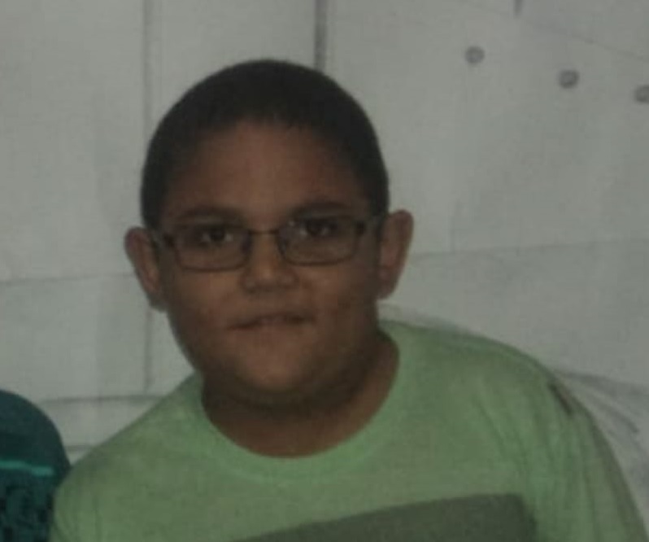

Seja bem-vindo(a)
a Landing Page!
~ Prazer ~

Me chamo Pedro Henrique (e sim, sou eu na foto quando tinha mais ou menos 10 anos),
tenho 19 anos e atualmente estou cursando Ciência da Computação na Universidade Vila Velha.
~ Sobre o Pedro ~
| Vida acadêmica: |
- Em meu ensino médio, estive, do primeiro ao terceiro ano, na EEEM Godofredo Schneider, mas não "desfrutei"
como deveria devido a pandemia do COVID-19. De 2022 a 2024 estive estudando para a prova do ENEM, e
graças a Deus atualmente estou estudando na Universidade Vila Velha, cursando Ciência da Computação. Diante
dos conhecimentos obtidos com uma matéria que está sendo uma das melhores (Construção de Sofware para Web),
estou habilitado a realizar sites como blogs, site para a divulgação de igrejas e entre outros.
|
| Vida profissional: |
- Posso afirmar que o único trabalho remunerado que eu participei foi como menor aprendiz na Chocolates Garoto,
em que estive realizando um curso técnico no SENAI para Técnico em Eletrotécnica. Atualmente, pretendo, após o
primeiro período na universidade, realizar um estágio que seja correspondente ao meu curso.
|
| Vida pessoal: |
- Alguns anos atrás descobri que a desculpa de "não termos tempo" é refutada pela afirmação "não temos prioridade".
Busco dividir o meu dia em alguns "blocos", nos quais eu priorizo o que tenho por necessidade. Portanto, a res-
peito do que tenho como hobby, gosto de tocar instrumentos de corda, ler alguns livros e, por vezes, jogar no
computador. A respeito de ler livros, o que eu busco ler diariamente é a Bíblia Sagrada dentro de um "bloco"
que eu chamo devocional, em que eu a leio escutando alguns louvores (gosto muito dos louvores do Projeto Sola).
|
~ Construção de sites ~
Diante dos conhecimentos transmitidos pelo professor Fabrício na apresentação da matéria Construção de Software para Web (que, por sinal, está sendo uma matéria
muito interessante de estar estudando), posso afirmar que estou habilitado para fazer alguns sites como blogs, divulgação de instituições, apresentação de produtos e entre outros.
Nesse sentido, é válido ressaltar que existe algumas diferenças para essa realização de sites. Portanto, segue abaixo algumas informações a esse respeito:
Site com páginas estáticas:
| De uma a duas páginas: |
De três a cinco páginas: |
Mais de cinco páginas: |
| R$ 500,00 (sujeito a análise) |
R$ 1.000,00 (sujeito a análise) |
R$ 1.500,00 (sujeito a análise) |
Tipos de páginas para site:
| Páginas estáticas: |
Páginas super avançadas: |
Páginas dinâmicas: |
| R$ 1.000 (sujeito a análise) |
R$ 5.000,00 (sujeito a análise) |
R$ 3.000,00 (sujeito a análise) |